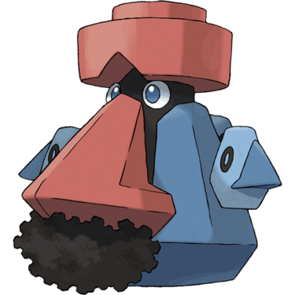
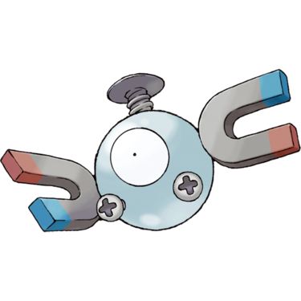
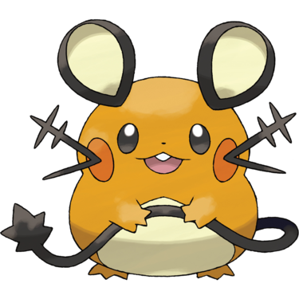
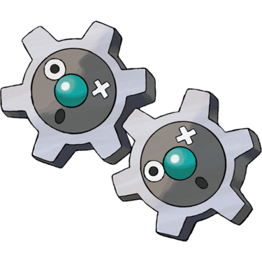
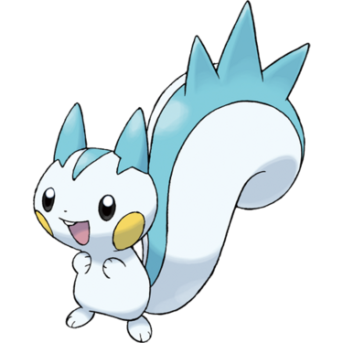
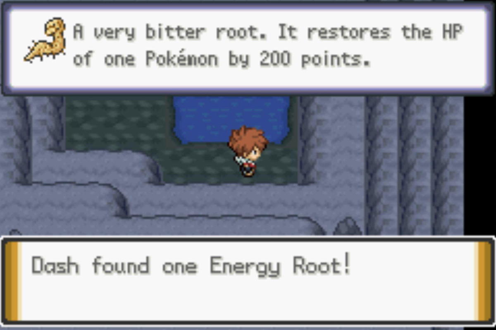

Quick Guide:
- Challenge the Dehara City Gym
- Obtain Permission to Use HM03 Surf
Dehara Gym – Battery Badge
The Dehara Gym is unlike any other Gym you’ve challenged so far.
Trainers here use two types – Electric and Steel – instead of just one.
- Steel moves are strong against Fairy-, Ice-, and Rock-type Pokémon
- Steel Pokémon are weak against Fighting-, Fire-, and Ground-type moves
- Electric-type moves are strong against Flying- and Water-type Pokémon
- Electric Pokémon have only one weakness – Ground-type moves
So, the logical choice would be to bring in a Ground-type, right?
Wrong.
The gimmick of this gym is that the magnetism in here causes Pokémon to levitate, so they are immune to Ground-type moves entirely.
The best bet is to get something strong against Steel, such as a Fire-type like Camerupt.
If you have the Cameruptite, activate it in battle – Mega Camerupt has Fire moves that will devastate most Steel Pokémon, and the boosted damage will help against the Electric-types.
All Gym Trainers
All Gym Trainers
| Gym Trainers | |
|---|---|
| Super Nerd Ezra | |
|
Luxio Electric (Lv.41) |
|
|
Probopass Rock/Steel (Lv.40) |
 |
| Worker Humphrey | |
|
Magnemite Electric/Steel (Lv.39) |
 |
|
Magneton Electric/Steel (Lv.41) |
 |
| Guitarist Luca | |
|
Manectric Electric (Lv.40) |
 |
|
Electrode Electric (Lv.41) |
 |
| Scientist Giselle | |
|
Charjabug Electric (Lv.40) |
|
|
Dedenne Electric/Fairy (Lv.40) |
 |
| Scientist Jose | |
|
Klang Steel (Lv.41) |
 |
|
Bronzong Steel/Psychic (Lv.41) |
 |
| Scientist Jerry | |
|
Bronzor Steel/Psychic (Lv.40) |
 |
|
Klink Steel (Lv.40) |
 |
|
Voltorb Electric (Lv.39) |
 |
| Super Nerd Zack | |
|
Electabuzz Electric (Lv.40) |
 |
|
Luxray Electric (Lv.40) |
|
| Collector Ashton | |
|
Emolga Electric/Flying (Lv.40) |
 |
|
Pachirisu Electric (Lv.41) |
 |
| Worker Bernie | |
|
Klink Steel (Lv.40) |
|
|
Magnemite Electric/Steel (Lv.40) |
|
|
Voltorb Electric (Lv.40) |
|
Gym Puzzle Layout
{kind=link}
This Gym is incredibly complicated to navigate, so you can quickly refer back to this map while reading the rest of the walkthrough.
The various directional lines mark the optimum route through the Gym. At certain points, you must turn bulbs on and off again – when that happens, the color of the line changes so backtracking is easier to see.
The order of the lines is:
- red
- blue
- green
- yellow
- magenta
- cyan
- purple
- orange
There are three floors in the Gym – 1F, B1F and B2F. Elevators on one particular floor can head to any of the other two levels – the map marks which one this is.
So, first – head east from the Guide, across a moving platform, and you will see an area with two elevators.

First, step on the leftmost elevator and it will take you down to B1F.
Once you arrive, go northwest until you see the first trainer you’ll need to challenge – Super Nerd Ezra.
After beating Ezra, go north and you will see a bulb switch. These switches turn electric gates on and off, so they’re vital to getting to the end of the Gym.
Turn the bulb on, and go back to the platform you came from on 1F.

This time, take the elevator you didn’t take last time – the northern one – and it will take you to another area of B1F.
Then, take the moving platform north until you see Worker Humphrey waiting for you.
Once you beat Humphrey, keep going north and take the elevator you see there. It will take you to B2F.
You’ll see two Tesla coils that used to generate an electric fence, but they appear to be off.
Turning the bulb on directed the flow of energy away from the coils and allows you to go to the next area.
Take the elevator up to 1F and pass Guitarist Luca.
Go down the elevator near him and you’ll end up back on B2F.
You will immediately see that an electric gate to the south has not been turned off yet.
Go to the elevator to the right of the one you arrived on.
Back on 1F, there’s a bulb you need to switch on. Remember where this is, because you will have to come back here later.
Once you’ve done that, go back to the previous elevator.

There’s another elevator in the north part of this area – step on to it and it will take you up to B1 and Giselle.
Defeat her and head west to another elevator that takes you up to B1.
The third bulb is here – turn it on, and remember where it is, because you’ll need to come back here to turn it off again in due time.
Go back to the Tesla coils on B2F that you couldn’t get past earlier.
They’re now off, so you can head past them and up to battle Scientist Jerry.
Take the elevator past Jerry and you will go to B1 and another set of deactivated Tesla coils.
Walk through them and onto the only place you can go from here – the other elevator, which takes you to 1F.
The fourth bulb is on the next platform – turn it on and head back the way you came.
Remember where Scientist Joey and the third bulb was, on 1F?
You’ll need to go back there now.
When you get back there, turn the bulb off.
Then go back to where the second bulb was – southeast of Guitarist Luca on 1F.
Once you’ve turned that one off, go all the way back to the entrance of the Gym on 1F. You should be standing back near where the Guide is.
Now you can go to the other side of the first platform and get through the Tesla coils there.
Take the elevator that is behind the disengaged coils and you’ll reach B2F.
Walk east of where the elevator takes you and you’ll run into Collector Ashton.
Step on the elevator just to the southeast of him and it will take you to B1F.

This is the fifth and final bulb you need to deal with – turn it on, and go back to the southwest corner of B2F.
From there, go north and you’ll see a final set of Tesla coils, deactivated.
Worker Bernie is the last obstacle between you and the Gym Leader.
If you manage to defeat him, go north and you’ll finally meet the gym leader Galavan.
Dehara Gym Leader – Galavan
You’ve probably seen a man in the corner of every gym city’s Pokémon Center giving a bit of an opinion on the local gym leader – well, it’s Galavan, and he’s the Gym Leader of this gym.
As if the levitation effect wasn’t difficult enough, he forces you to duel him in a Double Battle.
|
Gym Leader Galavan Double Battle |
|
|---|---|
|
Alolan Golem Rock/Electric (Lv.44) |
 |
|
Eelektross Electric (Lv.43) |
 |
|
Magneton Electric/Steel (Lv.42) |
|
|
Manectric (Mega) Electric (Lv.44) |
|
If you manage to beat him, Galavan gives you TM92 Volt Switch and the Battery Badge, which will finally allow you to use Surf.
Surf Backtracking Areas (Optional)
Back on Route 12, Professor Log gave both you and your Rival the HM for Surf, but you have not been able to use it.
Until now.
There are a few important items you can use Surf to access right now, if you want to backtrack:
| Surf Backtracking Locations | ||
|---|---|---|
| Icicle Cave 3F | ||
| Max Revive | In the middle of the lake | |
| TM13 Ice Beam | On the east side of the lake, up a ladder | |
| Icicle Cave 2F | ||
| Zygarde Cell | On the southern bank of the west lake | |
| Route 2 | ||
| Zygarde Cell | Northwest of the route, on a small island | |
| Shiny Stone | Near the entrance to Dresco Town, at water level | |
| Dresco Town | ||
| TM105 Brutal Swing | South of the Moltres plaza, at water level | |
| Route 3 | ||
| TM45 Attract | East side of the route, on a small island | |
| Carbos | West side of the route, on a small island | |
|
Deep Sea Scale (hidden) |
East side of the route, hidden in sand | |
|
Deep Sea Tooth (hidden) |
West side of the route, hidden in sand | |
| Cinder Volcano East 1F | ||
| TM35 Flamethrower | Across a small lava pond in the entry chamber | |
| Cinder Volcano West 1F | ||
| Flame Orb | East of the Chansey across the lava lake | |
| Magmarizer | Southeast bank of the lava lake | |
| Valley Cave B1F | ||
| Energy Root | Across a small pond in the southeast crater |  |
| TM44 Rest | Across a small pond in the southwest crater | |
| Tehl Town | ||
| Nugget | Across the pond, behind a tree | |
| Route 10 | ||
| Zygarde Cell | Southeast section of the central lake | |
| Green Shard | West of the Zygarde Cell, east side of the central island | |
| Macho Brace | South part of the central lake | |
| Dawn Stone | West part of the central lake, on an island | |
| Max Elixir | Southwest of the central lake, on a tiny bank | |
| Route 9 | ||
| TM30 Shadow Ball | On an island in the middle of the route | |
| Zygarde Cell | On an island in the middle of the route | |
| Flame Charge | Across a pond in a clearing near the Underground Passage exit | |
| Fallshore City | ||
| Fast Ball | East of the KBT Expressway entrance | |
| Silk Scarf | Behind a house south of the KBT Expressway entrance | |
| Shed Shell | West of the KBT Expressway entrance | |
| Steelixite | On the east end of the beach, up a tiny staircase | |
| Epidimy Town | ||
| Quick Ball | On the southeast bank of the pond | |
Progressing The Story
Once you’re done, fly to Cinder Volcano and take the shortcut through 1F to get to the east exit onto Route 4.
There are a few important things to pick up on Routes 13 and 14, where we were supposed to surf to get to the Ruins of Void before Hoopa intervened.
Hop on your Pokémon and surf south into Route 13 to get started.